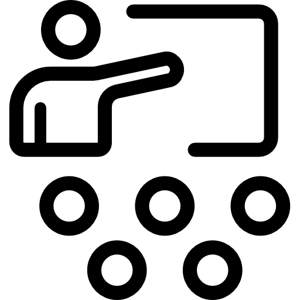
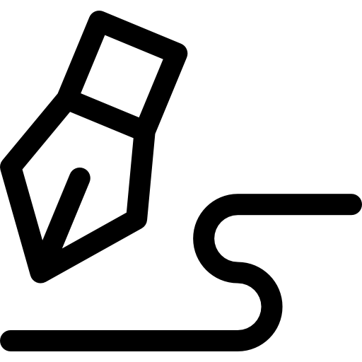
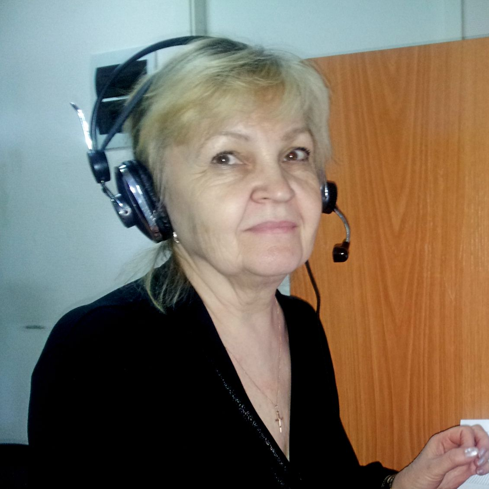

Условия работы
Вакансия: оператор колл-центра
Работа в оборудованном офисе (район пл.Кирова, Томск)
Удаленная работа (т.е. работа на дому)

Стабильные выплаты, 2 раза в месяц

Обучение, наставничество
Вечерний график позволит Вам совмещать работу у нас с основной работой или учебой
Оплата почасовая

Официальное трудоустройство, ГПХ, самозанятость

График сменный: дневная или вечерняя смены, выходные дни (от 4 часов в день), можно индивидуально согласовывать
Требования к соискателям
Возраст не имеет никакого значения!
Грамотная устная речь
Умение общаться с людьми, коммуникабельность
Стрессоустойчивость и настойчивость
Подробно о вакансии
Интервьюер, работая в офисе за компьютером, проводит опросы населения разных городов России на социальные темы. Специальная программа через IP-телефонию набирает сгенерированный случайным образом номер телефона. Задача интервьюера - пригласить человека, которому дозвонилась программа, поучаствовать в опросе, зачитать вопросы с экрана монитора с соблюдением несложных инструкций и внести информацию в онлайн-систему. Интервьюер должен уметь непринужденно вести беседу.
Результаты исследований можно услышать по телевизору, прочитать в интернете ("Большинство россиян поддерживают… "). Интервьюер – первый, кто узнает, что думает страна по актуальным темам! Работать интересно и познавательно.
Отзывы сотрудников
Оператор колл-центра
Мне 23 года. В Томск я приехала из р.п. Белый Яр Верхнекетского района Томской области. Сейчас я магистрант Томского государственного педагогического университета. Моя работа в ЦСМИ «Контекст» началась в октябре 2015 года. Свободный график работы и близкое расположение к дому – идеальные условия для студента, который учится и хочет зарабатывать.
Конечно, за все время пребывания здесь были как положительные, так и отрицательные моменты, однако я ни капли не жалею, что попала в эту среду. Профессия интервьюера оказалась очень интересной! Постоянное общение с людьми сделало меня более коммуникабельной и толерантной. Для человека, редко смотрящего телевизор, эта профессия является вдвойне полезной: большую часть информации о происходящих событиях в стране и мире я узнала, именно работая в «Контексте».
Наш коллектив состоит из очень интересных людей, веселых, отзывчивых, способных поддержать любой разговор. Мы открыты для общения друг с другом и постоянно делимся своими «фишками» при проведении самых сложных опросов. Невозможно описать эту профессию полностью, в эту среду нужно попасть и прочувствовать все самому. Однако, когда респондент говорит в завершении опроса «Спасибо Вам большое!», понимаешь всю пользу и важность проделанной работы!
А с июня 2017 года я работаю здесь менеджером. Мне очень нравится моя работа!
Оператор колл-центра
Я пенсионер. Больше 40 лет я отработала экономистом и даже не предполагала, что когда-нибудь сменю цифры на социологию. В компании ЦСМИ «Контекст» - с 2014 года.
Каждый день здесь интересен, словно открываешь в книге новую главу: о реальных судьбах, мнениях, взглядах на жизнь. Иногда люди за несколько минут опроса успевают рассказать о своей жизни... За день, бывает, слышишь и как будто видишь всю Россию - от Востока до Запада, от Севера до Юга.
Наша компания участвовала в первом Всероссийском конкурсе "Интервьюер-Профи 2016". В итоге мои интервью победили! Меня пригласили на конференцию в Москву, где выступали генеральный директор ВЦИОМ В.Федоров, генеральный директор ФОМ А.Ослон и руководители других крупных компаний. Я осознала, какой огромный интеллектуальный потенциал задействован в сфере социологических исследований, насколько это важно для развития государства и общества.
Работа интервьюера - это небольшой винтик в этом огромном, сложном механизме. Но именно от интервьюера во многом зависят результаты исследований: от понимания интервьюером задач, стоящих перед ним, от внимательности, достоверности отражаемой им информации, полученной от респондента, от понимания важности и ответственности этой работы.
В момент награждения я испытывала чувство гордости за наш коллектив и наше участие в этом сложном и ответственном процессе - социологическом исследовании.
Оператор колл-центра
Я пенсионер. Больше 40 лет я отработала экономистом и даже не предполагала, что когда-нибудь сменю цифры на социологию. В компании ЦСМИ «Контекст» - с 2014 года.
Каждый день здесь интересен, словно открываешь в книге новую главу: о реальных судьбах, мнениях, взглядах на жизнь. Иногда люди за несколько минут опроса успевают рассказать о своей жизни... За день, бывает, слышишь и как будто видишь всю Россию - от Востока до Запада, от Севера до Юга.
Наша компания участвовала в первом Всероссийском конкурсе "Интервьюер-Профи 2016". В итоге мои интервью победили! Меня пригласили на конференцию в Москву, где выступали генеральный директор ВЦИОМ В.Федоров, генеральный директор ФОМ А.Ослон и руководители других крупных компаний. Я осознала, какой огромный интеллектуальный потенциал задействован в сфере социологических исследований, насколько это важно для развития государства и общества.
Работа интервьюера - это небольшой винтик в этом огромном, сложном механизме. Но именно от интервьюера во многом зависят результаты исследований: от понимания интервьюером задач, стоящих перед ним, от внимательности, достоверности отражаемой им информации, полученной от респондента, от понимания важности и ответственности этой работы.<
В момент награждения я испытывала чувство гордости за наш коллектив и наше участие в этом сложном и ответственном процессе - социологическом исследовании.
Оператор колл-центра